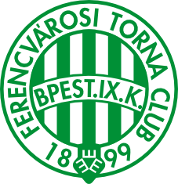
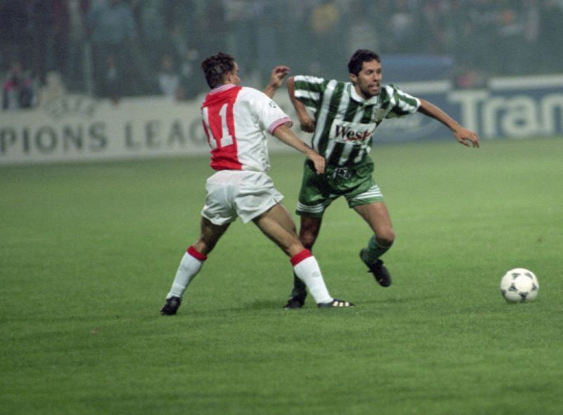

Magyarország legsikeresebb klubját 1899. május 3-án alapították Ferencvárosi Torna Club néven. Ehhez képest a futballszakosztály csak 1900. december 3-án alakult meg, és már a kezdetektől zöld-fehér volt a színe. A klub első elnöke dr. Springer Ferenc volt, a csapat pedig részt vett az első NB I-es bajnokságban, 1901-ben, és a 3. helyen végzett.
Az első nagy sikerre nem kellett sokáig várni, 1903-ban ugyanis bajnok lett a csapat, a játékosok pedig egy láda kolbászt kaptak a sikerért az egyik hentes szurkolónak köszönhetően.

Átadják az Üllői úti stadiont
A ferencvárosiak Üllői úti stadionját - amelyet újjáépítés után most is használ - 1911. február 12-én avatták fel. Az egyesület címerében az öt zöld és négy fehér csík Budapest IX. kerületét, Ferencvárost szimbolizálja, míg a zöld pajzsban elhelyezett, egymás felé fordított három E betű az Erkölcsöt, Erőt, Egyetértést jelenti, amely a klub jelmondata.
Az 1910-ben indított Magyar Kupában is hamar megszületett az első ferencvárosi siker. A csapat az 1913-as döntőben az 1947-ben megszűnt, ám tavaly nyáron újjáéledt BAK-ot (Budapesti Atlétikai Klubot) győzte le.
Utána azonban nehézségekkel kellett szembenézni, az I. világháború 1914-es kitörését követően a keret majd' minden tagja behívót kapott katonai szolgálatra, és sokan nem is tértek haza. A következő bajnoki sikerre 1926-ig kellett várni, majd az első profi magyar bajnokságot is megnyerte az FTC 1927-ben. Öt évvel később pedig klubtörténeti csúcs született, mind a 22 mérkőzését megnyerve lett bajnok.
A hazai sikereket kiemelkedő nemzetközi eredmények követték. A zöld-fehérek 1928-ban megnyerték a Közép-európai Kupát, a döntőben az osztrák Rapid Wien-t győzték le 10:6-os összesítéssel. A remek teljesítményt 1937-ben sikerült megismételni, akkor az olasz Lazio-t kellett legyőzni a fináléban. Akkoriban szerepelt az együttesben dr. Sárosi György (1931 és 1948 között), aki a mai napig a klub leggólerősebb játékosa – ha helyesek a számok, 646 tétmérkőzésen 636 gólt szerzett.
Az egyesület nehézségeken ment keresztül az 1950-es években. A politikai vezetés miatt előbb ÉDOSZ-ra, majd Kinizsire kellett változtatnia a nevét, színe pedig piros-fehér lett 1951-ben. Eredeti nevéhez és színéhez csak az 1956-os forradalom után térhetett vissza, két évvel később pedig megszerezte a 10. kupagyőzelmét.
VVK-siker, Aranylabda
A Ferencváros számára a legsikeresebb korszakot az 1960-as évek hozták. A csapat a négy bajnoki címe mellett megnyerte a Vásárvárosok Kupáját (VVK) 1965-ben – a döntőben az olasz Juventust verte meg 1:0-ra Torinóban. Ezzel a mai napig az egyetlen magyar klubcsapat, amelyik rangos európai kupát nyert. A VVK döntőjébe 1968-ban is bejutott, ám az angol Leeds Uniteddal szemben 1:0-s összesítéssel alulmaradt. Akkoriban a Karába, Varga, Albert, Rákosi, Fenyvesi támadósor riogatta az ellenfelek védelmét világszerte, s jól mutatja, milyen kivételes futballisták voltak, hogy Albert Flórián 1967-ben megkapta az Aranylabdát, amelyet sem előtte, sem után nem nyert meg magyar játékos.
A ferencvárosiak a következő évtizedben négyszer nyertek Magyar Kupát, az UEFA-kupában az elődöntőig meneteltek 1972-ben – az angol Wolverhampton Wanderers állította meg őket –, míg a Kupagyőztesek Európa-kupájában a döntőig jutottak 1975-ben, ám az ukrán Dinamo Kijev túl nagy falatnak bizonyult.
A csapat 1981-ben bajnoki címet nyert, Nyilasi Tibor pedig 30 góljával nemcsak gólkirály lett, hanem Ezüstcipőt is nyert, vagyis Európa második leggólerősebb játékosa volt. A következő NB I-es sikerre 1992-ig kellett várni, amikor Nyilasi már vezetőedzőként irányított.

BL-menetelés
Őt egy másik klublegenda, Novák Dezső követte a kispadon, akivel az 1995-ös bajnoki sikert követően a Bajnokok Ligája csoportkörébe is bejutott az együttes, miután a selejtezőben kiejtette a belga Anderlechtet. Bár a 3. helyen végzett a kvartettben, így nem jutott tovább, a Grasshoppers elleni legendás, idegenbeli 3–0-s siker a fiatalabb generációk számára is meghatározó futballélmény volt.
A nemzetközi porondon a 2004-2005-ös idényben is emlékezeteset nyújtott a csapat, akkor az UEFA-kupa csoportköréig jutott. A folytatás azonban rosszul alakult: anyagi okok miatt az NB II-be sorolták a Ferencvárost, amelynek három idény kellett ahhoz, hogy visszatérjen az élvonalba.
Újra az élvonalban
Azóta folyamatosan javult a teljesítmény, s mostanra visszakerült a csúcsra. Az FTC a 2010-es években háromszor nyert Magyar Kupát, kétszer-kétszer pedig Ligakupát és Szuperkupát. A 2018-2019-es bajnokságot megnyerte, amely a 30. bajnoki címe volt.
A 2019-2020-as szezonban az Európa Liga főtáblájára bejutott a csapat, majd a 2021-2022-es szezonban is.
A 2020-2021-es szezonban pedig a Bajnokok Ligájában, azaz az első számú európai kupában szerepelt, amellyel a 21. század eddigi legkiemelkedőbb magyar klubcsapata lett a nemzetközi porondon is. Az FTC ezen szezonjáról ide kattintva olvashat többet.